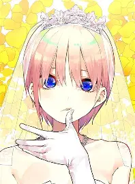
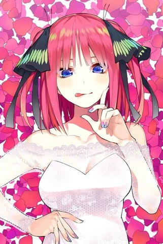
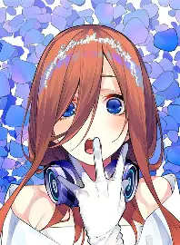
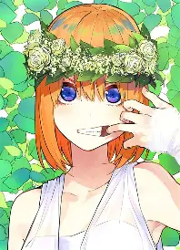
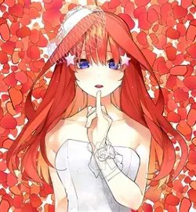

Знайомство з аніме-романтикою

«П’ять наречених» - романтична комедія, манга якої написана та проілюстрована Негі Харубою. Аніме-романтика виходила у 2019 та 2024 роках.
Нещодавно режисери розказали, що скоро вийде 3 сезон чи Спец-Випуск, який чекають мільйони людей.
Далі я вас ознайомлю з сестрами Накано.
Ічіка Накано

Найстарша сестра. Ічіка — спокійна, витончена і трохи загадкова дівчина, яка майже завжди тримає себе в руках. Вона вміє бути турботливою, але в тихих моментах видно, що за її холодним зовнішнім виглядом ховається дуже чутлива натура.
Її характер поєднує в собі розсудливість, елегантність і здатність приховувати власні почуття. Ічіка дуже добре розуміє, що відбувається навколо, але не любить втрачати контроль над ситуацією. Саме тому її романтичні переживання здаються ще більш переконливими й глибокими.
Працює актрисою, має природну чарівність і добре вміє вражати оточуючих не лише зовнішністю, а й своєю внутрішньою силою. Вона не завжди відкривається відразу, але коли це станеться, стає зрозуміло, що її любов і прихильність є по-справжньому сильними.
Ніно Накано

Найяскрава і найвпертіша. Ніно відразу виділяється серед сестер своєю впевненістю, стилем і сильним характером. Вона холодно ставиться до Футаро на початку, але за цією дистанцією ховається не байдужість, а дуже глибокі почуття, які вона не хоче відразу визнавати.
Дівчина любить порядок, красу і власну самостійність, тому охоче контролює все навколо. Її зухвалість і цілеспрямованість часто створюють враження неприступності, але насправді Ніно дуже чутлива і вміє любити надзвичайно сильно, коли довіряє людині.
Вона має смак до моди, макіяжу і гарного життя, але її справжня сила полягає в здатності не здаватися, навіть коли вона ранить себе або боїться втратити контроль над власними почуттями. Саме через цю внутрішню боротьбу вона стає однією з найзворушливіших сестер.
Міку Накано

Тиха і закохана в історію. Міку — найзамкнутіша з сестер, але саме в її спокійному характері прихована особлива глибина. Вона поводиться стримано, майже сором’язливо, проте її серце дуже сильне й віддане, коли вона вже відчуває, що любить.
Улюблені речі Міку — це читання, історія й атмосфера спокійної, замисленої реальності. Вона часто здається більш серйозною, ніж інші, але в її характері є ніжність і здатність цінувати відносини, які не вимагають зайвих слів. Її почуття завжди глибокі й щирі.
Зовнішньо вона схожа на спокійну дівчину з двома косичками, але в душі — на людину, яка дуже вміє любити і переживати. Саме її скромність робить її ще більш привабливою і неповторною.
Йоцуба Накано

Найенергійніша і найвеселіша. Йоцуба буквально наповнює простір своєю життєвою силою. Вона завжди в русі, завжди з посмішкою й не любить дозволяти іншим зациклюватися на важких думках. Її вміння підбадьорювати інших робить її душою компанії.
Попри активність і безтурботний настрій, вона не завжди показує, що в душі відчуває справжню тривогу. Під веселою зовнішністю часто ховається чутливість і бажання, щоб її теж підтримували. Вона дуже добра, але іноді вміє приховувати рани за яскравою поведінкою.
Її характер — це енергія, сміх і безмежна відкритість. Завдяки цій здатності знаходити позитив навіть у складних ситуаціях, вона стає для інших не лише веселою сестрою, а й справжнім джерелом надії.
Іцукі Накано

Найсерйозніша і найвідповідальніша. Іцукі — дівчина з сильним почуттям обов’язку, яка хоче бути корисною і достойною довіри. Вона багато вчиться, прагне стати хорошою людиною і покладається на принципи, а не на емоційні пориви.
Вона стримана і серйозна, але в неї є глибока внутрішня нежність, яку вона не завжди вміє показати. Іцукі дуже сором’язлива, тому її почуття часто залишаються прихованими, але саме це надає їй особливої уразливості й симпатії.
Її руде волосся й принциповість відразу впадають в очі, але справжня сила Іцукі — в її чесності, терпінні й вмінні любити тихо, але дуже глибоко. Вона не прагне до уваги, а прагне до справжньої душевної близькості.